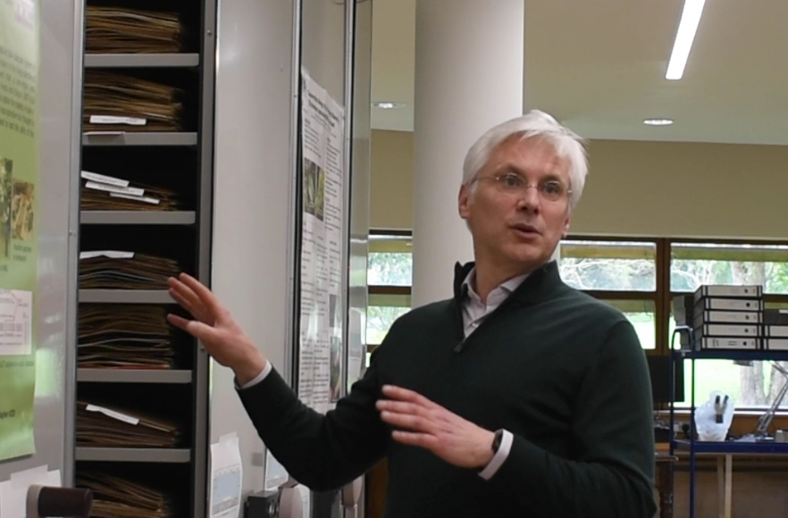
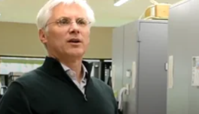
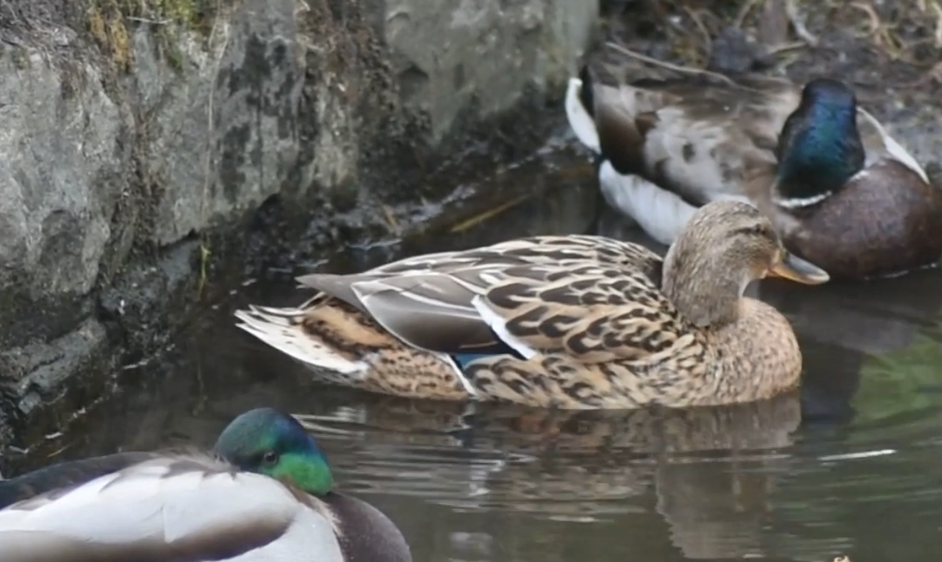

Documentary
Botanical Gardens Documentary
For this documentary I did the camera work for the interview itself and the scenic shots of the gardens. I had to set everything up and get people into position that would work for filming and sound.
I had to make sure the settings were suitable for filming and getting the right angles.
The process
Planning and shooting
This was another group project and with our group we were given the topic of climate change and the environment. After some disscusions we decided the Botanic Gardens in Glasnevin would be a perfect place to do the documentary on as the area was familiar to us all and something we would have a personal interest in.

My role
What I was responsible for
In this project I was responsible for contacting the Botanical Gardens and finding out who would be interested in partaking in our documentary. I was then given the information of Keeper and Herbarium Colin Kellegher who I remained in contact with throughout the process. I was also in charge of creating questions to ask during the interview portion of the documentary. I was also in charge of filming the interview and filler shots of the gardens to be included throughout the documentary.

Reflection
What I learned
I learnt a lot about setting up for interview styled shoots as well as professional outdoor shoots. I also learnt so much about the gardens from being in conntact with Colin and talking to him about his profession. I also learnt a lot about communicationg with buisnesses and organizing shoots and professional projects.
